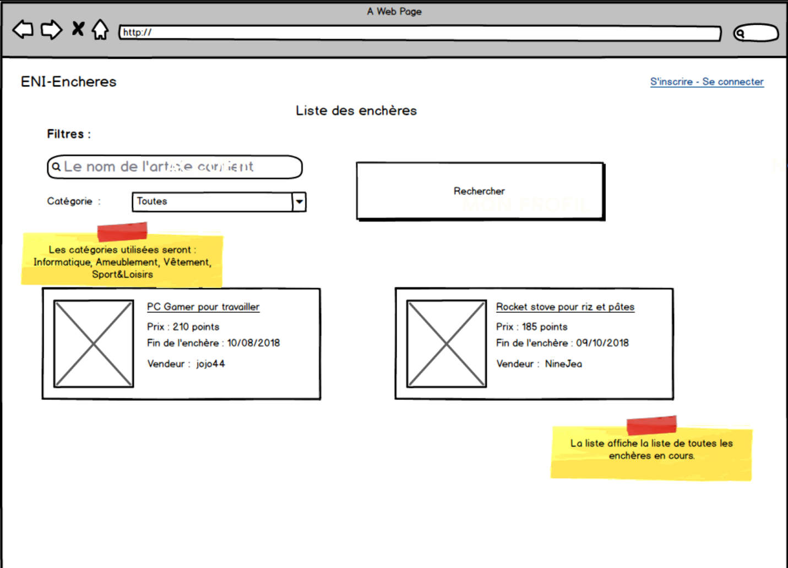
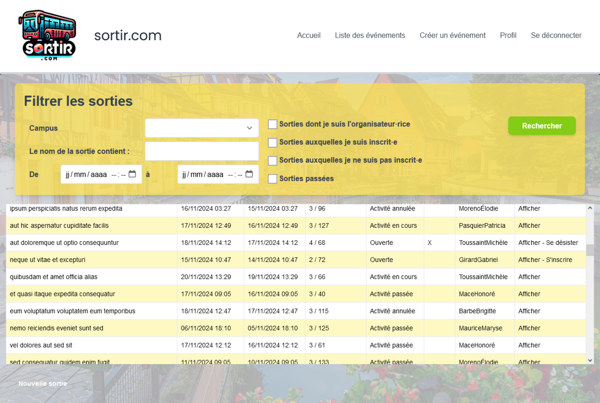
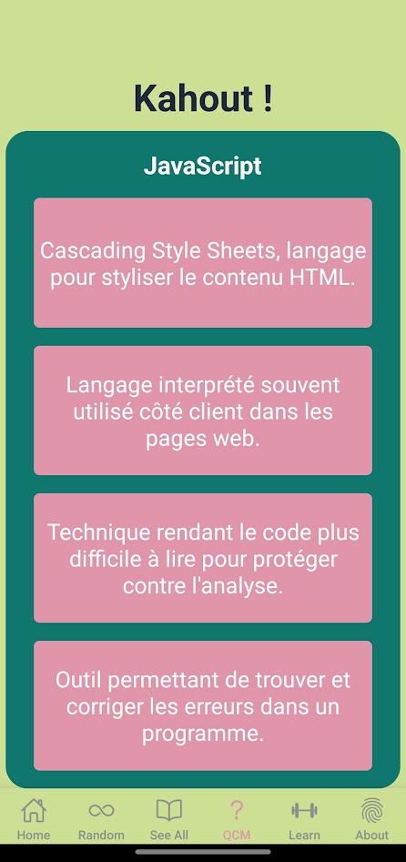
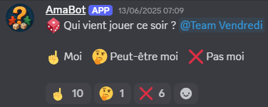

Bienvenue !
Moi, c’est Kim, développeuse web.
Rigoureuse et enthousiaste, je suis
actuellement à la recherche d'une alternance.

Moi, c’est Kim, développeuse web.
Rigoureuse et enthousiaste, je suis
actuellement à la recherche d'une alternance.

Après avoir exercé 7 ans en tant qu'infirmière, je me suis passionnée
pour le code. J'ai suivi une formation à l'ENI de Rennes pour devenir
développeuse Web !
Mes principaux atouts sont : ma curiosité,
ma persévérance et ma résilience.
Série S en 2010

En 2017
Inscription en 2024
Titre niveau bac +2, en cours
1er projet perso : Reproduction d'un tableau de Mondrian en HTML & CSS.

2e projet perso : Un jeu de mémorisation (Simon) avec JavaScript.

3e projet perso : Pour apprendre à manipuler la souris, utilisé dans le cadre d'un atelier d'initiation à l'informatique en médiathèque. (HTML, CSS, JS)
1er projet de formation ENI : Un site avec inscription et accès à un jeu de Memory (HTML, CSS, JS, Bootstrap)
2e projet de formation ENI : Création d'un site web permettant aux utilisateurs de participer à des enchères en ligne. L'application offre des fonctionnalités telles que la gestion des comptes utilisateurs, la mise en vente d'articles, et la participation aux enchères en temps réel (Java Spring Boot Thymeleaf SQL Server)
3e projet de formation ENI : Inspirée du concept de sortir.com, cette plateforme est spécialement conçue pour permettre aux étudiants de découvrir, organiser et participer à des activités adaptées (PHP Symfony MySQL TailwindCSS)
Projet personnel : Création d'une application pour réviser les définitions liées au passage du titre Développeur·euse Web et Web Mobile. Plus de 200 définitions, plusieurs façon de réviser : QCM, définition au hasard... (React Native)
Projet associatif : Développement d’un bot Discord en Python pour organiser des sessions de jeu. Chaque jour de jeu, le bot envoie automatiquement un message pour demander qui participera. Deux heures avant chaque session, il vérifie si au moins une personne avec le rôle de "Maître des clefs" a réagi. En l’absence de réaction, une alerte est envoyée au bureau de l'association.

J'aime beaucoup bouger. En ce moment, je fais de l'escalade de bloc & du skate.